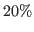
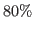
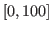
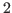

Adds a Graph to a Section.
Options
data,dseriesThe
dseriesthat provides the data for the graph. Default:noneaxisShape,`box'|`L'The shape the axis should have.
`box'means that there is an axis line to the left, right, bottom, and top of the graphed line(s).`L'means that there is an axis to the left and bottom of the graphed line(s). Default:`box'graphDirName,STRINGThe name of the folder in which to store this figure. Default:
tmpRepDirgraphName,STRINGThe name to use when saving this figure. Default: something of the form
graph_pg1_sec2_row1_col3.texheight,DOUBLEThe height of the graph, in inches. Default:
4.5showGrid,BOOLEANWhether or not to display the major grid on the graph. Default:
trueshowLegend,BOOLEANWhether or not to display the legend. NB: Unless you use the graphLegendName option, the name displayed in the legend is the
texname associated with thedseries. You can modify thistexname by using tex_rename. Default:falselegendAt,NUMERICAL_VECTORThe coordinates for the legend location. If this option is passed, it overrides the legendLocation option. Must be of size 2. Default:
empty.showLegendBox,BOOLEANWhether or not to display a box around the legend. Default:
falselegendLocation,`south west'|`south east'|`north west'|`north east'|`outer north east'Where to place the legend in the graph. Default:
`south east'legendOrientation, `vertical' | `horizontal'Orientation of the legend. Default:
`horizontal'legendFontSize,`tiny'|`scriptsize'|`footnotesize'|`small'|`normalsize'|`large'|`Large'|`LARGE'|`huge'|`Huge'The font size for legend entries. Default:
tinymiscTikzAxisOptions,STRINGIf you are comfortable with
PGFPLOTS/TikZ, you can use this option to pass arguments directly to thePGFPLOTS/TikZaxisenvironment command. Specifically to be used for desiredPGFPLOTS/TikZoptions that have not been incorporated into Dynare Reproting. Default:emptymiscTikzPictureOptions,STRINGIf you are comfortable with
PGFPLOTS/TikZ, you can use this option to pass arguments directly to thePGFPLOTS/TikZtikzpictureenvironment command. (e.g., to scale the graph in the x and y dimensions, you can pass following to this option:`xscale=2.5, yscale=0.5'). Specifically to be used for desiredPGFPLOTS/TikZoptions that have not been incorporated into Dynare Reproting. Default:emptyseriesToUse,CELL_ARRAY_STRINGSThe names of the series contained in the
dseriesprovided to the data option. If empty, use all series provided to data option. Default:emptyshade,datesThe date range showing the portion of the graph that should be shaded. Default:
noneshadeColor,STRINGThe color to use in the shaded portion of the graph. All valid color strings defined for use by
PGFPLOTS/TikZare valid. A list of defined colors is:`red',`green',`blue',`cyan',`magenta',`yellow',`black',`gray',`white',`darkgray',`lightgray',`brown',`lime',`olive',`orange',`pink',`purple',`teal', and`violet'. Furthermore, You can use combinations of these colors. For example, if you wanted a color that is  green and  purple, you could pass the string`green!20!purple'. You can also use RGB colors, following the syntax:`rgb,255:red,231;green,84;blue,121'which corresponds to the RGB color(231;84;121). More examples are available in the section 4.7.5 of thePGFPLOTS/TikZmanual, revision 1.10. Default:`green'shadeOpacity,DOUBLEThe opacity of the shaded area, must be in . Default:
20tickFontSize, ,`tiny'|`scriptsize'|`footnotesize'|`small'|`normalsize'|`large'|`Large'|`LARGE'|`huge'|`Huge'The font size for x- and y-axis tick labels. Default:
normalsizetitle,STRING|CELL_ARRAY_STRINGSSame as title, just for graphs.
titleFontSize,`tiny'|`scriptsize'|`footnotesize'|`small'|`normalsize'|`large'|`Large'|`LARGE'|`huge'|`Huge'The font size for title. Default:
normalsizetitleFormat,STRINGThe format to use for the graph title. Unlike titleFormat, due to a constraint of TikZ, this format applies to the title and subtitles. Default:
TikZ defaultwidth,DOUBLEThe width of the graph, in inches. Default:
6.0writeCSV,BOOLEANWhether or not to write a CSV file with only the plotted data. The file will be saved in the directory specified by graphDirName with the same base name as specified by graphName with the ending
.csv. Default:falsexlabel,STRINGThe x-axis label. Default:
noneylabel,STRINGThe y-axis label. Default:
nonexAxisTight,BOOLEANUse a tight x axis. If false, uses
PGFPLOTS/TikZenlarge x limitsto choose appropriate axis size. Default:truexrange,datesThe boundary on the x-axis to display in the graph. Default: all
xTicks,NUMERICAL_VECTORUsed only in conjunction with xTickLabels, this option denotes the numerical position of the label along the x-axis. The positions begin at
 . Default: the indices associated with the first and
last dates of the
. Default: the indices associated with the first and
last dates of the dseriesand, if passed, the index associated with the first date of the shade option.xTickLabels,CELL_ARRAY_STRINGS| `ALL'The labels to be mapped to the ticks provided by xTicks. Default: the first and last dates of the
dseriesand, if passed, the date first date of the shade option.xTickLabelAnchor,STRINGWhere to anchor the x tick label. Default:
`south'xTickLabelRotation,DOUBLEThe amount to rotate the x tick labels by. Default:
0yAxisTight,BOOLEANUse a tight y axis. If false, uses
PGFPLOTS/TikZenlarge y limitsto choose appropriate axis size. Default:falseyrange,NUMERICAL_VECTORThe boundary on the y-axis to display in the graph, represented as a
NUMERICAL_VECTORof size , with the first entry less than the second entry. Default: allyTickLabelFixed,BOOLEANRound the y tick labels to a fixed number of decimal places, given by yTickLabelPrecision. Default:
trueyTickLabelPrecision,INTEGERThe precision with which to report the yTickLabel. Default:
1yTickLabelScaled,BOOLEANDetermines whether or not there is a common scaling factor for the y axis. Default:
trueyTickLabelZeroFill,BOOLEANWhether or not to fill missing precision spots with zeros. Default:
trueshowZeroline,BOOLEANDisplay a solid black line at
 . Default:
. Default: falsezeroLineColor,STRINGThe color to use for the zero line. Only used if showZeroLine is true. See the explanation in shadeColor for how to use colors with reports. Default:
`black'